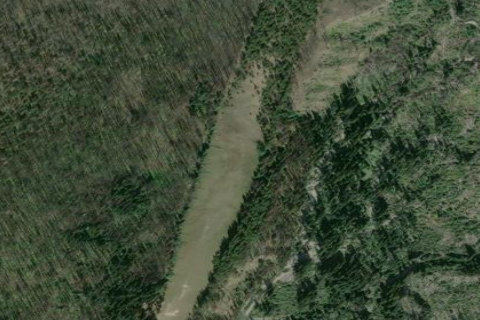

PASAYTEN, WA
WA

Aerial imagery source: Esri, Vantor, Earthstar Geographics, and the GIS User Community
View original source (Shortfield) →
| State | WA |
|---|---|
| Elevation | 4,320 ft |
| CTAF | 122.9 |
| Coordinates | 48.917649, -120.631084 |
Notes
[shortfield] Location Overview The airstrip sits along the Pasayten River and Lease Creek within the Okanogan National Forest, in the heart of the Pasayten Wilderness in the Cascade Range. It lies in Okanogan County at an elevation of approximately 4,327 feet. The strip is extraordinarily remote — accessible only by trail, with the nearest trailheads requiring hikes of many miles through rugged terrain. Camping & Recreation The site now serves as a staging area for trail crews and includes a cabin with bunks, an outhouse, and a tool storage shed. The meadow of the old runway is kept clear, likely by grazing horses. The surrounding Pasayten Wilderness offers world-class backcountry hiking, with connections to the Pacific Crest Trail and access to dramatic high-country terrain. Wildlife viewing, fishing along the Pasayten River, and horsepacking are popular pursuits in the area. Notes & Warnings The airstrip is currently closed and listed for historic and emergency reference only. Its condition is entirely unknown, and landing there may be both dangerous and illegal. A surface inspection found a number of holes near the centerline that appeared to have been intentionally dug, meaning any fixed-wing aircraft catching a wheel could face serious consequences — though helicopters could potentially land on the surface. Gusty winds are common in the area, and early departures and late arrivals should be planned accordingly. This is not a strip for inexperienced pilots. History The Pasayten Airstrip was built by the U.S. Forest Service in 1931, with the first aircraft — a 1928 Curtis Robin — touching down in 1932. It was used continuously for 38 years to provide backcountry access, support firefighting operations, and ferry supplies and equipment into what was then a Forest Service Primitive Area. It also played a role during World War II, when the Japanese were sending incendiary bombs across the Pacific in the jet stream. The airstrip was used by a variety of aircraft over the decades, including Ford Trimotors and Norsemans, and was closely tied to the national smokejumper program. It was ultimately closed in October 1968 with the establishment of the Pasayten Wilderness by Congress. Despite decades of closure, the strip has remained remarkably clear, and aviation historians have floated the idea of adding it to the National Register of Historic Places.